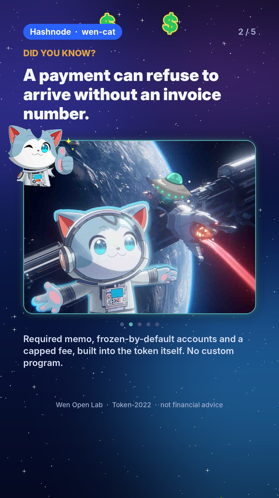
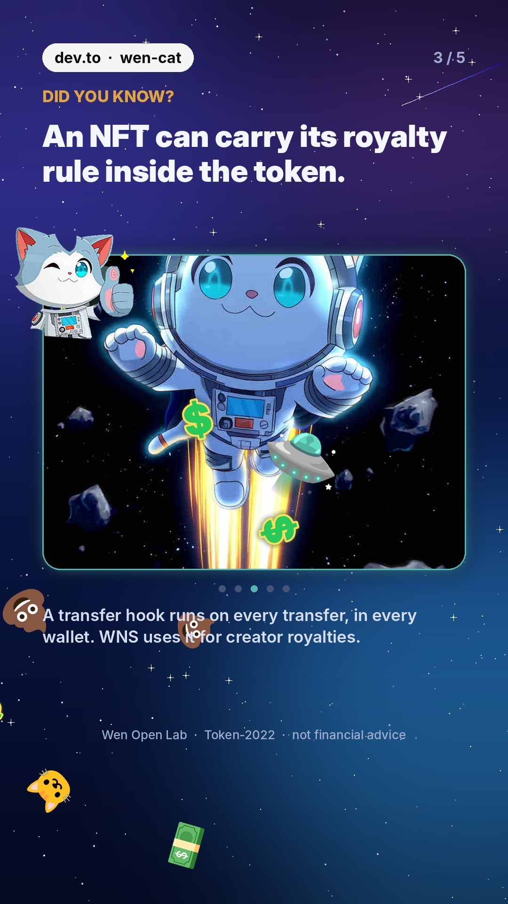
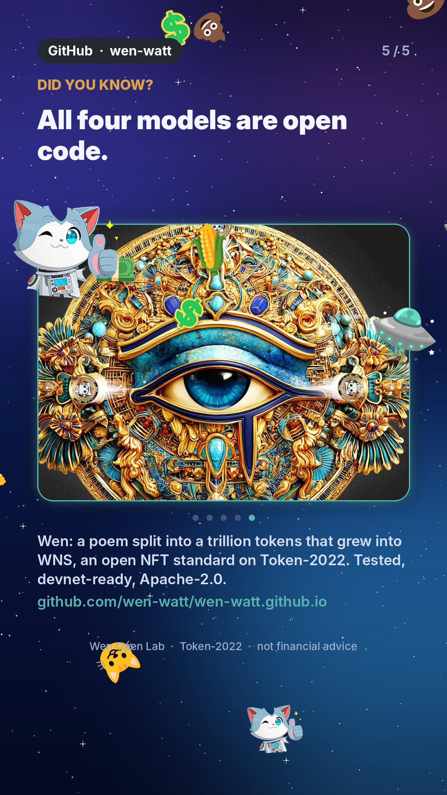

열 가지 해설: 쉬운 말로 푼 랩✎
- 0 · 로드맵
- 1 · 영수증과 보증
- 2 · 크리에이터 로열티
- 3 · B2B 인보이스
- 4 · 결제 브리지
- 5 · 시뮬레이터
- 6 · Devnet: 직접 재현
- 7 · 계산대
- 7.1 · 안전
- ✓ · 신뢰 사슬
- ★ · 이점과 활용
- ✎ · 열 가지 해설
- ▶ · 영상
- ? · 독자 발견
- 8 · 상점: 플러그인과 스킬

Wen은 1조 개의 토큰으로 나뉜 시에서 시작해 Solana Token-2022 위의 오픈 NFT 표준 WNS로 자랐습니다. 랩은 그 유산을 테스트를 거친 작은 도구로 바꿉니다. Wen은 소수를 위해 만들어지지 않았습니다. 그 표준, 코드, 이야기는 모두에게 열려 있고, 아래의 모든 해설이 그 근원으로 돌아갑니다. 이 글은 그것을 열 가지 해설로 모았습니다. 각각 "알고 계셨나요"로 시작해, 중요한 몇 줄의 코드, 그것을 증명하는 테스트, 누가 이득을 보는지, 모델이 어디서 멈추는지를 보여 줍니다. 오늘 새 모델이 둘 있습니다. 영수증 검증기와 토큰 검사기. 검사 37개 통과.
1 · 지갑 속에 사는 보증서

종이 카드는 잃어버리고, PDF 영수증은 받은편지함에 묻힙니다. Token-2022는 구매를 하나뿐인 토큰으로 바꿉니다. 소수점 0자리, 공급량 1 고정, 세부 정보는 민트 안에, 그리고 보증이 구매자에게 남도록 NonTransferable 확장. 체인에는 주문의 SHA-256 해시만 남고 주문 자체는 남지 않습니다. 구매자가 JSON을 갖고 있다가 나중에 일치를 증명할 수 있습니다. Wen New Standard(WNS)가 쓰는 가벼운 NFT 구조와 같습니다.
Wen의 실. 이 구조는 Wen New Standard의 것입니다. Wen 커뮤니티에서 태어난 WNS가 Token-2022에 올린 바로 그 가벼운 NFT. Wen이 모두에게 열었기에 상점의 영수증도 밈처럼 자유롭게 쓸 수 있습니다.
핵심 코드 · lab/code/src/01-receipt-nft.ts · Apache-2.0
// extensions first, then the mint, then the metadata
createInitializeMetadataPointerInstruction(mint, merchant, mint, TOKEN_2022_PROGRAM_ID),
createInitializeNonTransferableMintInstruction(mint, TOKEN_2022_PROGRAM_ID),
createInitializeMintInstruction(mint, 0, merchant, null, TOKEN_2022_PROGRAM_ID),
// ... metadata fields: order_hash, warranty_until, sku
createMintToInstruction(mint, buyerAta, merchant, 1, [], TOKEN_2022_PROGRAM_ID),
// lock supply at exactly 1
createSetAuthorityInstruction(mint, merchant, AuthorityType.MintTokens, null, [], TOKEN_2022_PROGRAM_ID),확인 방법
PASS M1 supply is exactly 1, decimals 0, mint authority removed
PASS M1 soulbound receipt cannot be transferred
PASS M1 nobody can mint a second copy쓸모 있는 곳
- 구매자: 잃어버릴 수도, 고친 PDF로 위조할 수도 없는 보증.
- 상점: 공개 장부에 개인 정보를 저장하지 않는 구매 증명.
한계, 분명하게
- 토큰은 증명일 뿐, 보증 조건은 여전히 상점 정책과 소비자법을 따릅니다.
- 소울바운드라고 잃어버릴 수 없는 것은 아닙니다. 지갑을 잃으면 보증서도 잃고, 상점이 자체 확인 후 다시 발급합니다.
랩: 1단계 · 영수증과 보증 · dev.to 전체 해설: How to model a warranty card as a soulbound Token-2022 token (devnet walkthrough)
2 · 인보이스 번호가 필요한 결제

회계사는 참조 없이 들어온 결제를 맞추느라 몇 시간을 잃습니다. Token-2022 확장 세 가지가 평범한 토큰을 규칙 있는 정산 레일로 바꿉니다. 수신 계정은 메모를 요구하고(MemoTransfer), 새 계정은 발행자가 승인할 때까지 동결 상태로 시작하며(DefaultAccountState), 상한이 있는 비율 수수료를 토큰 프로그램 자체가 원천 징수합니다(TransferFeeConfig). 맞춤 온체인 프로그램은 필요 없습니다. 메모는 전송 바로 앞의 명령이어야 합니다.
Wen의 실. WNS는 규칙이 각 앱이 아니라 토큰 안에 살 수 있음을 보여 주었습니다. 인보이스 레일은 Wen 커뮤니티의 같은 생각을 장부로 가져옵니다. 번호 없는 결제는 토큰 스스로 거부합니다.
핵심 코드 · lab/code/src/03-b2b-invoice.ts · Apache-2.0
export function buildPayInvoice(args) {
return [
...(args.invoiceId ? [memoInstruction(`invoice:${args.invoiceId}`, args.payer)] : []),
createTransferCheckedWithFeeInstruction(args.from, args.mint, args.to, args.payer,
args.amount, DECIMALS, expectedFee(args.amount), [], TOKEN_2022_PROGRAM_ID),
];
}확인 방법
PASS M3 payment WITHOUT invoice number is rejected
PASS M3 payment to a NOT approved company is rejected (account frozen)
PASS M3 fee cap works (fee on 100,000 is 50, not 250)쓸모 있는 곳
- 장부: 모든 결제가 온체인에 인보이스 번호를 지닙니다.
- 비즈니스 네트워크: 승인된 거래 상대만 토큰을 보유할 수 있습니다.
한계, 분명하게
- 메모는 공개됩니다. 인보이스 번호만, 이름이나 개인 정보는 절대 안 됩니다.
- 메모 규칙은 메모가 있는지만 보고 번호가 맞는지는 보지 않습니다. 결제마다 인보이스와 대조하세요(독자 수정, 11월 9일).
- 실제 정산 토큰은 인가받은 기관이 발행합니다. 이것은 스테이블코인이 아니라 모델입니다.
랩: 3단계 · B2B 인보이스 · Hashnode 전체 해설: A payment that refuses to arrive without an invoice number
3 · NFT 안의 로열티 규칙

Token-2022 민트에는 TransferHook가 있을 수 있습니다. 모든 지갑과 마켓플레이스에서 전송할 때마다 실행되는 프로그램의 주소입니다. 프로그램이 안 된다고 하면 전송은 일어나지 않습니다. WNS는 이것을 창작자 로열티에 씁니다. 해설은 모든 구매자와 지갑이 가장 먼저 해야 할 단계를 보여 줍니다. 훅을 읽고, 그 권한도 읽으세요. 내일 누가 규칙을 바꿀 수 있는지는 권한이 정하니까요. 훅이 걸린 토큰을 옮기려면 훅의 추가 계정과 함께 TransferChecked가 필요합니다.
Wen의 실. 기술적으로 Wen이 시작된 곳이 여기입니다. WNS는 전송 훅으로 창작자 로열티를 강제합니다. 코드는 공개된 Wen Program Library에 게시된 WNS 로열티 프로그램 주소를 씁니다.
핵심 코드 · lab/code/src/02-royalty-transfer.ts · Apache-2.0
const info = await getMint(connection, mint, 'confirmed', TOKEN_2022_PROGRAM_ID);
const hook = getTransferHook(info); // { programId, authority }
const isWnsRoyalty = hook?.programId.equals(WNS_ROYALTY_PROGRAM_ID) ?? false;
// transfer so that the hook runs: extra accounts are resolved on-chain
const ix = await createTransferCheckedWithTransferHookInstruction(
connection, source, mint, destination, owner.publicKey, 1n, 0, [], 'confirmed', TOKEN_2022_PROGRAM_ID);확인 방법
PASS M2 NFT mint created with a transfer hook
PASS M2 hook program read from the mint = WNS royalty distribution쓸모 있는 곳
- 창작자: 마켓플레이스마다의 약속이 아니라 작품과 함께 다니는 규칙.
- 구매자와 에이전트: RPC 호출 한 번으로 기계가 규칙을 읽습니다.
한계, 분명하게
- 로컬 테스트는 훅을 읽을 뿐, WNS 로열티 프로그램 자체는 로컬 VM에서 실행되지 않습니다.
- 훅은 프로그램이 말하는 것을 실수까지 그대로 강제합니다. 코드와 감사를 읽으세요.
랩: 2단계 · 크리에이터 로열티 · dev.to 전체 해설: How to read a Token-2022 transfer hook before you move an NFT
4 · 주문마다 참조 키 하나

Solana Pay는 주문마다 새 무작위 reference 키를 줍니다. 지갑이 그것을 읽기 전용 계정으로 전송에 넣으므로, 상점은 그 키로 트랜잭션을 찾은 뒤 주문을 결제 완료로 표시하기 전에 수신자, 금액, 토큰, 참조, 메모를 검증합니다. 찾는 것은 믿는 것이 아닙니다. findReference는 어떤 트랜잭션이 키를 언급한다는 것만 알려 주고, 돈을 확인하는 것은 validateTransfer입니다. 그다음 웹훅이 상점 시스템에 알립니다. 카드 결제 대행사의 콜백이 하는 역할입니다.
Wen의 실. Solana Pay 링크는 어떤 토큰에도 통하고, 랩의 코드는 WEN을 하나뿐인 실제 주소로 적어 둡니다. Wen에서 온 규칙이 여기서도 통합니다. 상점은 이름이 아니라 주소를 확인합니다.
핵심 코드 · lab/code/src/04-solana-pay-bridge.ts · Apache-2.0
const reference = (await generateKeyPairSigner()).address; // random, never reused
const url = encodeURL({ recipient, amount, splToken, reference,
label: 'Wen Open Lab demo shop', message: `Order ${orderId}`, memo: `order:${orderId}` });
// later
const found = await findReference(rpc, req.reference, { commitment: 'confirmed' });
await validateTransfer(rpc, found.signature, { recipient, amount, splToken, reference, memo }, { commitment: 'confirmed' });확인 방법
PASS M4 payment link round-trips: recipient, amount, token, reference, memo
PASS M4 every order gets a unique reference쓸모 있는 곳
- 소규모 판매자: 결제 처리사 계정 없이 정산.
- 고객: 카드 번호도 개인 정보도 상점 서버로 가지 않습니다.
한계, 분명하게
- 안정적인 금액이 필요한 상점은 안정 자산을 받아야 합니다. 모델은 아무것도 환전하지 않습니다.
- 환불, 분쟁, 세금은 여전히 상점의 책임입니다.
랩: 4단계 · 결제 브리지 · Hashnode 전체 해설: One reference key per order: matching Solana Pay payments without guesswork
5 · 네트워크 없이 Token-2022 테스트

LiteSVM은 실제 SPL Token-2022와 Memo 프로그램을 테스트 프로세스에 올립니다. 랩의 테스트 환경은 헬퍼 다섯 개입니다: send, fund, rent, account, check. 디코더 하나가 @solana/web3.js 트랜잭션을 LiteSVM에 잇고, 보낼 때마다 블록해시를 만료시켜 반복 단계가 서로 독립되게 하며, 실패는 로그와 함께 값으로 돌아옵니다. 쓸모 있는 테스트는 거부를 예상하고 그 이유를 설명하는 프로그램 로그를 확인하는 테스트입니다.
Wen의 실. Wen의 출시는 Solana가 통과한 공개 스트레스 테스트였습니다. 공개적으로 시험하고 다시 반복하는 것, 랩이 그날부터 지켜 온 습관입니다.
핵심 코드 · lab/code/test/run-litesvm.ts · Apache-2.0
function send(ixs, signers) {
const tx = new Transaction().add(...ixs);
tx.feePayer = signers[0].publicKey;
tx.recentBlockhash = svm.latestBlockhash();
tx.sign(...signers);
const res = svm.sendTransaction(getTransactionDecoder().decode(tx.serialize()));
svm.expireBlockhash();
return res instanceof FailedTransactionMetadata
? { ok: false, err: res.toString(), logs: res.meta().logs() } : { ok: true, logs: res.logs() };
}확인 방법
37 checks across six models
ALL CHECKS PASSED쓸모 있는 곳
- 개발자: 에어드롭도 호출 제한도 없는 빠른 Token-2022 테스트 루프.
- 검토자: 이 페이지의 모든 주장 뒤에 테스트 한 줄이 있습니다.
한계, 분명하게
- 올리지 않은 프로그램은 실행되지 않습니다. 볼 수 있는 것은 시험하고, 볼 수 없는 것은 말하세요.
- 로컬에서 초록불이어도 메인넷 준비가 된 것은 아닙니다. devnet, 검토, 감사가 아직 남았습니다.
랩: 검증 기록 · dev.to 전체 해설: Testing Token-2022 in LiteSVM: 37 checks, no network
6 · 공식 다섯 개로 보는 카드 수수료와 온체인 수수료

랩의 시뮬레이터는 공개 공식 다섯 개로 카드 결제 대행과 온체인 결제를 비교하며 브라우저에서 돌아갑니다. 예시 값(월 주문 2,000건, 평균 40달러, 카드 2.9% + 0.30달러, 지불 거절 0.5%에 건당 15달러, 정산 2일)이면 카드 쪽은 월 약 3,470달러가 들고 약 5,333달러가 정산 중에 묶입니다. 온체인 쪽은 한 달 내내 네트워크 비용이 0.02 SOL이고, 비용 거의 전부는 0.5% 법정화폐 환전인 400달러입니다. 핵심은 누가 이기느냐가 아니라 비용이 실제로 어디 있느냐입니다.
Wen의 실. 상점이 WEN을 받게 된다면 시뮬레이터는 분명히 말합니다. WEN은 계산대에 커뮤니티와 관심을 가져오고, 안정적인 금액은 스테이블코인의 몫입니다. 쓸모가 먼저, 약속은 없습니다.
핵심 코드 · 시뮬레이터 페이지 · Apache-2.0
Revenue = orders × average order
Card payment fees = revenue × card fee % + orders × fixed fee
Chargeback costs = orders × chargeback rate × (average order + fee per chargeback)
On-chain fees = orders × network fee in SOL × SOL price + revenue × conversion %
Money waiting for settlement = revenue ÷ 30 × settlement days확인 방법
formulas shown on the page
calculation runs in the browser, nothing is sent쓸모 있는 곳
- 소상공인: 광고가 아니라 계산에서 나온 결정.
- 모두: 비교에서 빠진 것의 분명한 목록.
한계, 분명하게
- 예시 기본값이지 견적이 아닙니다. 내 계약 조건과 오늘 가격을 쓰세요.
- 빠진 것: 구축과 규정 준수 비용, 지갑 보급, 지불 거절이 주는 구매자 보호, 가격 변동.
랩: 5단계 · 시뮬레이터 · dev.to 전체 해설: Card fees vs on-chain fees: five formulas instead of opinions
7 · 기계처럼 보증서 확인하기

랩의 새 모델: 모델 5, 해설 1의 나머지 절반. 순수 함수 하나가 민트와 보유자 계정을 받아 여덟 질문에 답합니다. Token-2022 민트인지, 하나뿐인지, 소울바운드인지, 메타데이터가 민트 안에 있는지, 기대한 상점이 발행했는지, 보증이 아직 유효한지, 주문 해시가 구매자의 주문과 맞는지, 기대한 지갑이 보유하는지. 모든 검사를 이름과 함께 돌려주므로 계산대의 사람은 그냥 "무효"가 아니라 "만료됨"이나 "다른 곳에서 발행됨"을 봅니다. 얇은 래퍼가 RPC 호출 한 번으로 두 계정을 읽습니다.
Wen의 실. 검증기는 해설 1의 WNS 방식 보증서를 그대로 확인합니다. Wen이 연 것을 이제 누구나 누구의 허락 없이 확인할 수도 있습니다.
핵심 코드 · lab/code/src/05-verify-receipt.ts · Apache-2.0
add('one of one: supply 1, decimals 0, mint authority removed',
m.supply === 1n && m.decimals === 0 && m.mintAuthority === null);
add('soulbound: NonTransferable extension present',
getExtensionTypes(m.tlvData).includes(ExtensionType.NonTransferable));
add('issued by the expected shop (update authority)', !!md.updateAuthority?.equals(exp.merchant));
add('warranty still valid', typeof f.warranty_until === 'string' && f.warranty_until >= today);
if (exp.order) add("order hash matches the buyer's order", f.order_hash === orderHash(exp.order));확인 방법
PASS M5 genuine soulbound card passes every check
PASS M5 a different order is rejected (hash mismatch)
PASS M5 a card from another issuer is rejected
PASS M5 an expired warranty is rejected
PASS M5 a wallet that does not hold the card is rejected
PASS M5 a transferable (not soulbound) card is flagged쓸모 있는 곳
- 상점: 고객 데이터베이스 없는 확인.
- 에이전트와 로봇: 스크린샷을 믿지 않고 스스로 확인할 수 있는 증명.
한계, 분명하게
- 검증기는 상점의 키를 믿습니다. 키 관리가 진짜 보안 경계입니다.
- 날짜는 UTC 기준 ISO 문자열로 비교하며, 유예 기간은 코드가 아니라 정책입니다.
랩: 1단계 · 영수증과 보증 · dev.to 전체 해설: Checking a warranty card like a machine: a Token-2022 verifier
8 · 감사인처럼 어떤 토큰이든 읽기

랩의 새 모델: 모델 6, 어떤 민트에든 쓰는 읽기 전용 검사기. 어느 프로그램이 토큰을 소유하는지, 누가 아직 발행하거나 동결할 수 있는지, 어떤 Token-2022 확장이 있는지, 그리고 각각이 보유자에게 무슨 뜻인지 쉬운 말로 알려 줍니다. 누구의 토큰이든 옮기거나 소각할 수 있는 영구 위임, 전송 수수료, 전송 훅과 그것을 바꿀 수 있는 사람, 동결 상태로 시작하는 계정, 소울바운드 토큰, 닫을 수 있는 민트. 지갑 주소는 잘못 읽지 않고 거부합니다.
Wen의 실. 진짜 WEN 민트 WENWENvqqNya429ubCdR81ZmD69brwQaaBYY6p3LCpk로 시험해 보고, 우리 말까지 포함해 누구의 말도 믿지 말고 그 권한을 직접 읽어 보세요.
핵심 코드 · lab/code/src/06-inspect-mint.ts · Apache-2.0
if (t === ExtensionType.PermanentDelegate) {
const d = getPermanentDelegate(m);
notes.push(`Permanent delegate ${d?.delegate.toBase58()}: can transfer or burn tokens from ANY holder.`);
} else if (t === ExtensionType.TransferHook) {
const h = getTransferHook(m);
notes.push(`Transfer hook: program ${h?.programId.toBase58()} runs on every transfer` +
(h?.authority ? `; authority ${h.authority.toBase58()} can change it.` : '; it cannot be changed.'));
}확인 방법
PASS M6 classic SPL mint: no extensions, both authorities reported
PASS M6 permanent delegate is flagged for holders
PASS M6 transfer fee is read from the mint (1% capped)
PASS M6 removed authorities are reported as none
PASS M6 a wallet address is refused, not parsed as a mint쓸모 있는 곳
- 보유자: 토큰을 받기 전에 그 뒤의 권한을 압니다.
- 지갑과 익스플로러: 확장을 쉬운 말로 바꾸는 함수 하나.
한계, 분명하게
- 확장 자체는 좋지도 나쁘지도 않습니다. 영구 위임은 규제 자산에서 법적 요건일 수 있습니다.
- 검사기는 민트를 읽을 뿐, 훅 뒤의 프로그램은 읽지 않습니다. 그것은 따로 검토해야 합니다.
랩: 신뢰 사슬 · Hashnode 전체 해설: Reading any token like an auditor: a Token-2022 extensions checklist
9 · 누구나 반복할 수 있는 devnet 실행

로컬 테스트는 기계 하나에서 돌고, devnet은 같은 명령을 모든 단계에 공개 링크가 붙는 공개 네트워크로 옮깁니다. 랩의 devnet 스크립트는 devnet 밖에서는 실행을 거부하고, 새 빈 지갑의 잔액을 확인하고, 소울바운드 영수증을 발행한 뒤, 인보이스 전용 정산 토큰을 만들고, 계정 두 개를 승인하고, 번호가 있는 인보이스를 지급하고, 번호 없는 결제가 거부되는 것을 보여 줍니다. 단계마다 ?cluster=devnet이 붙은 Solana Explorer 링크를 출력합니다.
Wen의 실. devnet 실행은 Wen의 출시가 메인넷에서 한 일을 공개적으로 반복합니다. 평범한 사람들, 각자 트랜잭션 하나, 그리고 익스플로러에서 보이는 모든 단계.
핵심 코드 · lab/code/scripts/devnet-demo.ts · Apache-2.0
solana-keygen new -o devnet-wallet.json # new throwaway wallet
solana airdrop 2 $(solana-keygen pubkey devnet-wallet.json) --url devnet
npm install
npm test # LiteSVM first
KEYPAIR=./devnet-wallet.json npm run devnet # then devnet: Explorer links for every step확인 방법
refuses to run outside devnet
payment WITHOUT invoice number was rejected, as designed쓸모 있는 곳
- 누구나: 스크린샷을 믿는 대신 브라우저로 열어 보는 증명.
- 팀: 검토와 수업에 쓸 수 있는 공유되고 반복 가능한 데모.
한계, 분명하게
- devnet 코인은 가치가 없고, devnet은 초기화될 수 있습니다.
- 새 빈 지갑만 쓰세요. 실제 자금을 한 번이라도 담았던 키는 절대 안 됩니다.
랩: 6단계 · Devnet: 직접 재현 · dev.to 전체 해설: From a throwaway wallet to Explorer links: a devnet run anyone can repeat · 모두를 위한 Hashnode 글: Proof you can open in a browser
10 · 이름이 아니라 주소를 검색하라

연감의 첫 번째 안전 규칙을 누구나 할 수 있는 확인 세 가지로 바꿨습니다. 하나: 민트 주소를 공식 출처와 한 글자씩 비교하세요. 진짜 WEN은 WENWENvqqNya429ubCdR81ZmD69brwQaaBYY6p3LCpk입니다. 둘: 해설 8의 검사기나 익스플로러로 어느 프로그램이 민트를 소유하고 어떤 권한이 있는지 확인하세요. 셋: 진짜 팀, 에어드롭, 고객 지원 채팅은 절대 시드 문구를 요구하지 않습니다. 이름, 티커, 그림은 장식이고, 주소가 신원입니다.
Wen의 실. 진짜 WEN은 주소 하나입니다: WENWENvqqNya429ubCdR81ZmD69brwQaaBYY6p3LCpk. Wen은 모두에게 열려 있고, 바로 그래서 사본이 나타납니다. 주소는 커뮤니티가 자기 자신으로 남는 방법입니다.
핵심 코드 · lab/code/src/common.ts · Apache-2.0
export async function detectTokenProgram(connection: Connection, mint: PublicKey): Promise<PublicKey> {
const info = await connection.getAccountInfo(mint);
if (!info) throw new Error(`Mint ${mint.toBase58()} not found on this cluster`);
if (info.owner.equals(TOKEN_2022_PROGRAM_ID)) return TOKEN_2022_PROGRAM_ID;
if (info.owner.equals(TOKEN_PROGRAM_ID)) return TOKEN_PROGRAM_ID;
throw new Error(`Account ${mint.toBase58()} is not a token mint`);
}확인 방법
PASS M6 a wallet address is refused, not parsed as a mint
the same check runs before every model쓸모 있는 곳
- 모두: 가장 흔한 토큰 사기를 막는 습관.
- 커뮤니티: 베낄 수 있는 이름 대신 어디서나 되풀이할 주소 하나.
한계, 분명하게
- 주소가 맞다고 토큰이 좋은 선택이 되는 것은 아닙니다. 진짜라는 것일 뿐입니다.
- 공식 출처도 사칭될 수 있습니다. 적어도 두 곳을 교차 확인하세요.
랩: 공식 출처 · Hashnode 전체 해설: Search the address, not the name: verifying a token in three checks
무엇을 뜻하나: 숨김에서 열림으로
돈, 코드, 트랜잭션을 다루는 사람에게
수십 년 동안 상거래의 규칙은 보이지 않는 곳에 있었습니다. 카드 처리사의 계약서, 마켓플레이스의 정책, 결제를 손으로 맞추는 백오피스에. 열 가지 해설은 같은 규칙이 누구나 읽을 수 있는 토큰 안으로 옮겨 가는 것을 보여 줍니다. 누가 보유할 수 있는지, 전송에 얼마가 드는지, 어느 인보이스를 지급하는지, 누가 로열티를 받는지, 카드가 진짜인지. 연감의 해석으로는, Wen이 단순한 밈을 넘어 바로 쓸 수 있는 열린 장치로 작동하는 곳이 여기입니다. 커뮤니티에서 나온 표준(WNS), 누구나 Apache-2.0으로 쓸 수 있는 코드, 그리고 닻이 되는 공개 주소 하나. 사적인 시스템에 숨어 있던 것이 열려 있고 확인 가능한 인프라가 됩니다. 이것은 예측이 아니라 관점입니다. 모델은 장치를 보여 주고, 테스트는 그것이 작동함을 보여 줍니다.
그 밖의 모두에게
이 모델들이 설명하는 것을 쓰려고 코드를 짤 필요는 없습니다. 같은 생각이 세계 어디서나 통합니다:
- 쇼핑: 지갑 안에 살면서 잃어버리지도 위조되지도 않는 영수증과 보증.
- 일과 사업: 늘 인보이스 번호를 지닌 회사 간 결제.
- 예술, 음악, 사진: 플랫폼마다 달라지지 않고 작품과 함께 다니는 로열티.
- 작은 가게와 시장: 카드 번호도 개인 정보도 모으지 않고 주문과 맞춰지는 결제.
- 일상의 안전: 믿기 전에 주소로 토큰을 확인하고 그 권한을 읽기.
Wen이 특별한 이유. Wen은 백만 개가 넘는 지갑에 판 상품이 아니라 그들과 나눈 시로 시작했습니다. 표준은 공개적으로 제안되었고 코드는 모두에게 열려 있으며, 출시는 모두가 보는 앞에서 Solana가 통과한 실시간 시험이었고, 진짜 WEN은 누구나 확인할 수 있는 주소 하나입니다. 이야기가 있는 토큰은 많습니다. Wen은 모두가 쓸 수 있는 것을 남겼고, 그래서 여기 모든 해설이 Wen으로 돌아갑니다.
전체 해설이 있는 곳
모든 해설은 dev.to와 Hashnode에도 개발자를 위해 하나씩 전체로 실립니다. 이 표는 글이 나올 때마다 갱신됩니다.
| # | 해설 | 플랫폼 | 상태 |
|---|---|---|---|
| 1 | 지갑 속에 사는 보증서 | dev.to | 게시됨 |
| 2 | 인보이스 번호가 필요한 결제 | Hashnode | 게시됨 |
| 3 | NFT 안의 로열티 규칙 | dev.to | 게시됨 |
| 4 | 주문마다 참조 키 하나 | Hashnode | 게시됨 |
| 5 | 네트워크 없이 Token-2022 테스트 | dev.to | 게시됨 |
| 6 | 공식 다섯 개로 보는 카드 수수료와 온체인 수수료 | dev.to | 게시됨 |
| 7 | 기계처럼 보증서 확인하기 | dev.to | 게시됨 |
| 8 | 감사인처럼 어떤 토큰이든 읽기 | Hashnode | 게시됨 |
| 9 | 누구나 반복할 수 있는 devnet 실행 | dev.to · Hashnode | 게시됨 |
| 10 | 이름이 아니라 주소를 검색하라 | Hashnode | 게시됨 |
7단계 Wen Counter는 두 번 썼습니다. dev.to의 Solana Pay 위의 수신 전용 계산대와 Hashnode의 상점이 규모를 키우기 전 일곱 가지 답. 계산대 자체: 7단계 · Wen Counter.
8단계, 상점을 위한 Wen Counter도 두 번 썼습니다. dev.to의 수신 전용 WooCommerce Solana Pay 게이트웨이와 그것을 설치하는 스킬과 Hashnode의 상점을 위한 무료 암호화폐 결제. 이 단계: 8단계 · 상점: 플러그인과 스킬.
전체 테스트 기록
PASS M1 receipt minted (soulbound=true)
PASS M1 supply is exactly 1, decimals 0, mint authority removed
PASS M1 metadata inside the mint: name, order hash, warranty date — warranty_until=2027-10-10
PASS M1 buyer holds the receipt
PASS M1 soulbound receipt cannot be transferred — rejected by Token-2022
PASS M1 nobody can mint a second copy
PASS M1 receipt minted (soulbound=false)
PASS M1 supply is exactly 1, decimals 0, mint authority removed
PASS M1 metadata inside the mint: name, order hash, warranty date — warranty_until=2027-10-10
PASS M1 buyer holds the receipt
PASS M1 transferable receipt can be resold or gifted
PASS M1 nobody can mint a second copy
PASS M3 settlement mint created (fee 0.25% cap 50, frozen by default)
PASS M3 seller account requires an invoice memo
PASS M3 issuer funds the buyer account
PASS M3 payment WITHOUT invoice number is rejected — Program log: Error: No memo in previous instruction required for recipient to receive a transfer
PASS M3 payment to a NOT approved company is rejected (account frozen) — Program log: Error: Account is frozen
PASS M3 invoice INV-2026-0042 paid with memo to approved company
PASS M3 invoice number is recorded on-chain (memo in logs)
PASS M3 seller received amount minus fee; fee withheld for the platform — received 997.5, fee 2.5
PASS M3 fee cap works (fee on 100,000 is 50, not 250)
PASS M2 NFT mint created with a transfer hook
PASS M2 hook program read from the mint = WNS royalty distribution — diste3nXmK7ddDTs1zb6uday6j4etCa9RChD8fJ1xay
PASS M4 payment link round-trips: recipient, amount, token, reference, memo — solana:WENWENvqqNya429ubCdR81ZmD69brwQaaBYY6p3LCpk?amount=10…
PASS M4 every order gets a unique reference
PASS M5 genuine soulbound card passes every check — 8 checks
PASS M5 a different order is rejected (hash mismatch) — order hash matches the buyer's order
PASS M5 a card from another issuer is rejected — issued by the expected shop (update authority)
PASS M5 an expired warranty is rejected — warranty still valid
PASS M5 a wallet that does not hold the card is rejected — held by the expected wallet
PASS M5 a transferable (not soulbound) card is flagged — soulbound: NonTransferable extension present
PASS M6 classic SPL mint: no extensions, both authorities reported — Mint authority is set / Freeze authority is set
PASS M6 Token-2022 mint created with permanent delegate and transfer fee
PASS M6 permanent delegate is flagged for holders
PASS M6 transfer fee is read from the mint (1% capped) — PermanentDelegate, TransferFeeConfig
PASS M6 removed authorities are reported as none
PASS M6 a wallet address is refused, not parsed as a mint
ALL CHECKS PASSED이 모델에서 Wen의 자리
모든 해설은 WEN을 백만 개가 넘는 지갑으로 실어 나른 같은 장치를 씁니다. Token-2022 확장과 WNS 구조. 밈이 문을 열었고, 해설은 그 뒤에 무료로, 공개적으로 무엇을 지을 수 있는지 보여 줍니다. 가격도 약속도 없이, 시험해 볼 수 있는 쓸모만.
Wen Open Lab · 로드맵 · 전체 코드 · 소식 · GitHub의 코드